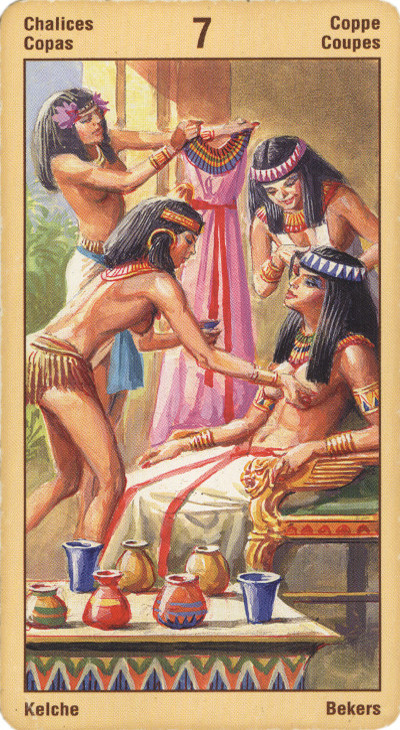

Семёрка Кубков
Прямое положение: воображаемая благосклонность, построение "воздушных замков", сентиментальность.
Значение: Ложный выбор. Эти дары Судьбы – лишь искушение, иллюзия: что бы человек ни выбрал из предложенных ему даров, это не принесет ему счастья. Эта карта выпадает, когда человеку кажется, что ему известны все возможные варианты, и он должен лишь выбрать один из них. Нет: в данном случае он должен либо найти еще один, совершенно иной вариант, либо отложить решение, ибо сейчас оно просто не может быть правильным.
Чем богаче наша творческая и созидательная жизнь, тем разнообразнее мечты и грезы, которые мы можем вызывать в своем воображении. Для нас жизненно необходимо проводить четкие различия между миром воображаемым и миром физическим. Не исключено, что в данный момент вы переживаете период, когда вас привлекают многие идеи, но вы не можете определиться, по какому пути пойти, может быть, вам одновременно сделали несколько предложений и вы не можете остановиться ни на одном их них.
Иногда эта карта может указывать на то, что вы предаетесь оргиям и кутежам, жадно преследуя любую возможность удовлетворить свои страсти и желания.
Семёрка Кубков - это карта иллюзии, миража, призраков. Она показывает, что мы поддаёмся обманчивым надеждам и ложным представлениям, что мы обманываемся и позволяем обманывать себя. Как правило, она выступает предвестницей отрезвления, то есть разочарования, и её надо воспринимать как последнее предупреждение: открой глаза!
Ловушка - следовать воображению, не анализируя.
Если в личном раскладе выпала Семерка Чаш, то вам есть над чем призадуматься. Эта карта, в целом весьма благоприятная по своему значению, характеризует человека как творческую личность, полную фантазий и часто уходящую в мир выдуманный из мира реального.
При раскладе на ситуацию вам следует опасаться того, что ваши планы и проекты - не более чем идеи, которые никак не связаны с реальной жизнью. Возможно, что вашей непосредственной вины в этом нет: просто ситуация еще «не дозрела» до того момента, когда нужно будет приниматься за дело.
То же самое можно сказать и о взаимоотношениях с любимым человеком: как бы вам ни хотелось перевести все на новый, более высокий уровень, придется выждать какое-то время. Либо вы, либо человек, на которого вы гадаете, не готовы к углублению отношений.
В перевернутом виде означает, что ложный выбор, увы, уже сделан, и теперь остается лишь думать, как исправить ошибку.
В перевернутом положении карта означает: желание, решительность, сильную волю, разумный выбор, ощущение того, что цель вот-вот будет достигнута. Иногда семерка кубков может означать слезы, истерическое состояние, ибо не всякий человек способен принять обретение своих идеалов.